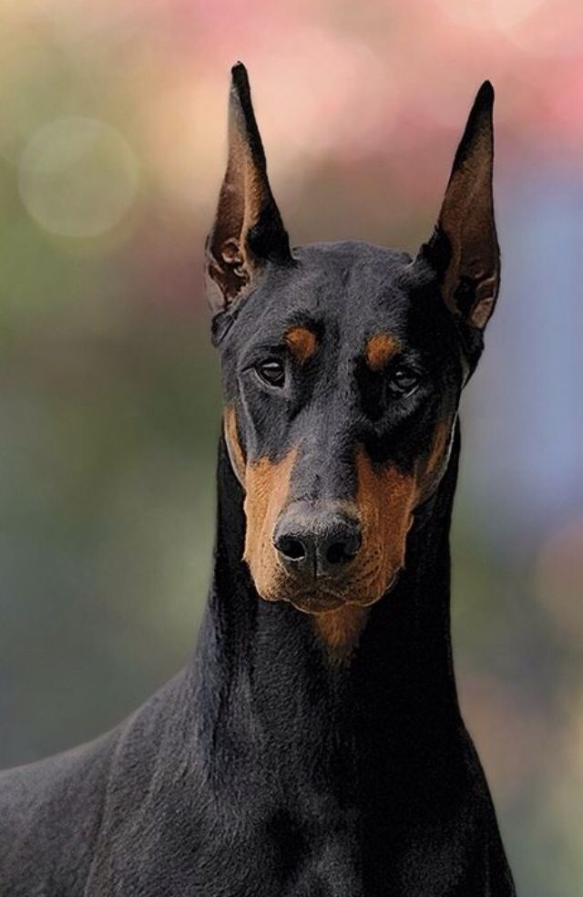

К дефектам породы относят любое отклонение от требований стандарта. Дисквалифицирующими признаками являются: по общему виду – несоответствие внешности собаки половой принадлежности (кобель в сучьем типе или наоборот), голубые или желтые (волчьи) глаза, нарушение прикуса и отсутствие зубов; по состоянию шерсти – видимо удлиненная или волнистая, редкая с залысинами, наличие белых пятен; по характеру – боязливость, нервозность и агрессивность.